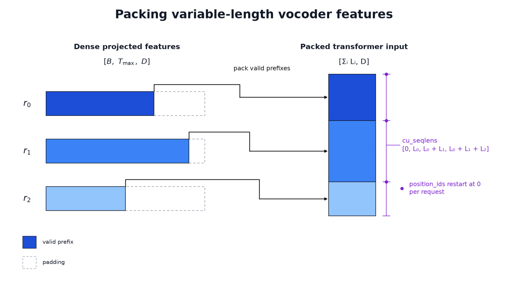

<section class="container" style="font-family: -apple-system-font,BlinkMacSystemFont, Helvetica Neue, PingFang SC, Hiragino Sans GB , Microsoft YaHei UI , Microsoft YaHei ,Arial,sans-serif;font-size: 14px;line-height: 1.75;text-align: left;">
<style>
/* 传送门统一样式（add-portal.py 动态注入时引用此 class） */
.portal-title { font-size:12px; color:#888; }
.portal-links { font-size:12px; color:#888; }
.portal-links a { color:#888; text-decoration:none; }
</style>
<div style="background:#e8f4fd;padding:14px 16px 10px 16px;border-radius:6px;margin-bottom:18px;margin-top:0 !important;">
<div style="text-align:center;margin-bottom:10px;">
<strong style="font-weight:bold;font-size:16px;color:#1a6ba0;">要点速览</strong>
</div>
<div style="font-size:14px;color:#3f3f3f;line-height:1.75;">
- <strong style="color:#0F4C81;font-weight:bold;font-size:inherit;">要点关键词1</strong>：核心内容。替换本占位。<br  /><br  />- <strong style="color:#0F4C81;font-weight:bold;font-size:inherit;">要点关键词2</strong>：核心内容。替换本占位。<br  /><br  />- <strong style="color:#0F4C81;font-weight:bold;font-size:inherit;">要点关键词3</strong>：核心内容。替换本占位。</div>
</div>

<hr class="hr" style="border-style: solid;border-width: 2px 0 0;border-color: rgba(0, 0, 0, 0.1);-webkit-transform-origin: 0 0;-webkit-transform: scale(1, 0.5);transform-origin: 0 0;transform: scale(1, 0.5);height: 0.4em;margin: 1.5em 0;"  />


<h2 class="h2" data-heading="true" style="display: table;padding: 0 0.2em;margin: 4em auto 2em;color: #fff;background: #0F4C81;font-weight: bold;text-align: center;">正文第一章标题</h2>
<p class="p" style="margin: 1.5em 8px;letter-spacing: 0.1em;color: #3f3f3f;">第一段正文文字。</p>
<p class="p" style="margin: 1.5em 8px;letter-spacing: 0.1em;color: #3f3f3f;">第二段正文文字。</p>
<figure style="margin: 1.5em auto;text-align: center;">

<figcaption style="font-size:12px;color:rgb(153,153,153);text-align:center;display:block;margin-top:8px;">图片说明文字</figcaption></figure>
<h3 class="h3" data-heading="true" style="padding-left: 8px;border-left: 3px solid #0F4C81;margin: 2em 8px 0.75em 0;color: #3f3f3f;font-weight: bold;line-height: 1.2;">子标题示例</h3>
<p class="p" style="margin: 1.5em 8px;letter-spacing: 0.1em;color: #3f3f3f;">子标题下的段落。</p>
<h2 class="h2" data-heading="true" style="display: table;padding: 0 0.2em;margin: 4em auto 2em;color: #fff;background: #0F4C81;font-weight: bold;text-align: center;">含表格的章节</h2>
<p class="p" style="margin: 1.5em 8px;letter-spacing: 0.1em;color: #3f3f3f;">下面是一张示例表格。</p>
<table class="preview-table" style="color: #3f3f3f;margin-top: 0 !important;">
<thead style="font-weight: bold;color: #3f3f3f;">
<tr><th class="th" style="border: 1px solid #dfdfdf;padding: 0.25em 0.5em;color: #3f3f3f;word-break: keep-all;background: rgba(0, 0, 0, 0.05);">列1</th><th class="th" style="border: 1px solid #dfdfdf;padding: 0.25em 0.5em;color: #3f3f3f;word-break: keep-all;background: rgba(0, 0, 0, 0.05);">列2</th><th class="th" style="border: 1px solid #dfdfdf;padding: 0.25em 0.5em;color: #3f3f3f;word-break: keep-all;background: rgba(0, 0, 0, 0.05);">列3</th></tr>
</thead>
<tbody>
<tr class="tr"><td class="td" style="border: 1px solid #dfdfdf;padding: 0.25em 0.5em;color: #3f3f3f;word-break: keep-all;">A</td><td class="td" style="border: 1px solid #dfdfdf;padding: 0.25em 0.5em;color: #3f3f3f;word-break: keep-all;">B</td><td class="td" style="border: 1px solid #dfdfdf;padding: 0.25em 0.5em;color: #3f3f3f;word-break: keep-all;">C</td></tr>
<tr class="tr"><td class="td" style="border: 1px solid #dfdfdf;padding: 0.25em 0.5em;color: #3f3f3f;word-break: keep-all;">D</td><td class="td" style="border: 1px solid #dfdfdf;padding: 0.25em 0.5em;color: #3f3f3f;word-break: keep-all;"><strong style="color:#0F4C81;">E</strong></td><td class="td" style="border: 1px solid #dfdfdf;padding: 0.25em 0.5em;color: #3f3f3f;word-break: keep-all;">F</td></tr>
</tbody>
</table>

<hr class="hr" style="border-style: solid;border-width: 2px 0 0;border-color: rgba(0, 0, 0, 0.1);-webkit-transform-origin: 0 0;-webkit-transform: scale(1, 0.5);transform-origin: 0 0;transform: scale(1, 0.5);height: 0.4em;margin: 1.5em 0;"  />

<div style="background:#f5f0eb;padding:14px 16px 10px 16px;border-radius:6px;margin-bottom:16px;">
<div style="text-align:center;margin-bottom:8px;">
<strong style="font-weight:bold;font-size:15px;color:#8b6f4c;">结语</strong>
</div>
<div style="font-size:14px;color:#3f3f3f;line-height:1.75;">
结语分析内容1。<br  /><br  />结语分析内容2。</div>
</div>

<div style="text-align:center;">
<span class="portal-title">【传送门】</span>
<div style="text-align:left;display:inline-block;" class="portal-links">
<a class="normal_text_link mp_article_text_link" href="https://mp.weixin.qq.com/s/OoHu1yeuh1gzgCfEiPvDuQ" target="_blank" data-linktype="2">RL的下一个大突破：不是优化可验证问题而是把'不可验证'领域变得'可验证'</a><br>
<a class="normal_text_link mp_article_text_link" href="https://mp.weixin.qq.com/s/2eWh5jZJPHsv0wi9km2nVg" target="_blank" data-linktype="2">NVIDIA TriAttention解读: KV Cache压缩最大的问题不是算法而是两个Infra问题</a><br>
<a class="normal_text_link mp_article_text_link" href="https://mp.weixin.qq.com/s/6BtVexCy0SNiRWBkf58Z4Q" target="_blank" data-linktype="2">腾讯混元hy3大模型技术之TurnOPD：回合感知的在线策略蒸馏，长程Agent提速2.29倍</a><br>
<a class="normal_text_link mp_article_text_link" href="https://mp.weixin.qq.com/s/pCRjhls1WFaiRglb2MtjBw" target="_blank" data-linktype="2">蚂蚁CausalMix: 将数据混合从超参搜索转换成因果推断</a><br>
<a class="normal_text_link mp_article_text_link" href="https://mp.weixin.qq.com/s/OqtF6ZaWQNu3o-VAWLfqbg" target="_blank" data-linktype="2">榨干GPU性能：流水线解码消除GPU气泡，推理吞吐提升35%</a><br>
<a class="normal_text_link mp_article_text_link" href="https://mp.weixin.qq.com/s/nVqW9acA7NN1zeALDwRAsw" target="_blank" data-linktype="2">Google新论文RubricEM: 评分标准引导的深度研究Agent训练框架</a><br>
<a class="normal_text_link mp_article_text_link" href="https://mp.weixin.qq.com/s/WrzegA1sALzJmjvE_hDKeg" target="_blank" data-linktype="2">TokenSpeed-Kernel：把推理内核做成一等公民</a><br>
<a class="normal_text_link mp_article_text_link" href="https://mp.weixin.qq.com/s/3btXHAVd8_x5CM5CWETc2g" target="_blank" data-linktype="2">Agent卷向AI Infra: SGLang团队用硬核Agent优化框架和CUDA Kernal性能</a><br>
<a class="normal_text_link mp_article_text_link" href="https://mp.weixin.qq.com/s/23SRrRBWY4D9fWbk2PN30g" target="_blank" data-linktype="2">【Agent for AI Infra三】摩尔线程MusaCoder国产算子生成超过Opus4.7：数据合成-SFT-RL全栈拆解</a><br>
<a class="normal_text_link mp_article_text_link" href="https://mp.weixin.qq.com/s/s0Ovn3_tnbbl9jxfAC3WLg" target="_blank" data-linktype="2">阿里Sparse Attention on CXL替代RDMA做KV Cache解耦 推理2.1×吞吐, 9.7×TTFT</a><br>
<a class="normal_text_link mp_article_text_link" href="https://mp.weixin.qq.com/s/CYCs6dgCsKhNlfDHb7trXA" target="_blank" data-linktype="2">KVCache缝合术: 突破前缀匹配天花板,首Token快14倍 多文档快2~4倍</a><br>
<a class="normal_text_link mp_article_text_link" href="https://mp.weixin.qq.com/s/2NmM9xDA-1eKlFs_moi7Qw" target="_blank" data-linktype="2">把KVCache变成可训练记忆：Context Tuning让LLM免权重微调</a><br>
<a class="normal_text_link mp_article_text_link" href="https://mp.weixin.qq.com/s/EStFTcdTm2WolN0-VYxDpA" target="_blank" data-linktype="2">智谱GLM 5.2 RL: 单Rollout异步优化SAO稳定训练1000步全面超越GRPO</a><br>
<a class="normal_text_link mp_article_text_link" href="https://mp.weixin.qq.com/s/HnGKVp45C-GApBJ-LleP6g" target="_blank" data-linktype="2">小米MiMo罗福莉:8卡GPU让1T参数模型跑出1000 TPS , FP4+DFlash+TileRT全解读</a><br>
<a class="normal_text_link mp_article_text_link" href="https://mp.weixin.qq.com/s/FTsibdpbEjvoPWtxGqgxkQ" target="_blank" data-linktype="2">小米MiMo罗福莉后训练新范式MOPD: 多教师同策略蒸馏，多领域无损集成</a><br>
<a class="normal_text_link mp_article_text_link" href="https://mp.weixin.qq.com/s/L6krDtAzuCiX4y2KNYYvfQ" target="_blank" data-linktype="2">万亿参数RL实战：如何用28个H200节点训GLM-5</a><br>
</div>
</div>


<hr class="hr" style="border-style: solid;border-width: 2px 0 0;border-color: rgba(0, 0, 0, 0.1);-webkit-transform-origin: 0 0;-webkit-transform: scale(1, 0.5);transform-origin: 0 0;transform: scale(1, 0.5);height: 0.4em;margin: 1.5em 0;"  />

<p class="p" style="margin: 1.5em 8px;letter-spacing: 0.1em;color: #3f3f3f;"><span style="font-size:12px;color:#888888;font-family:'Courier New',monospace;">参考：https://arxiv.org/html/XXXX.XXXXX</span></p>
</section>
